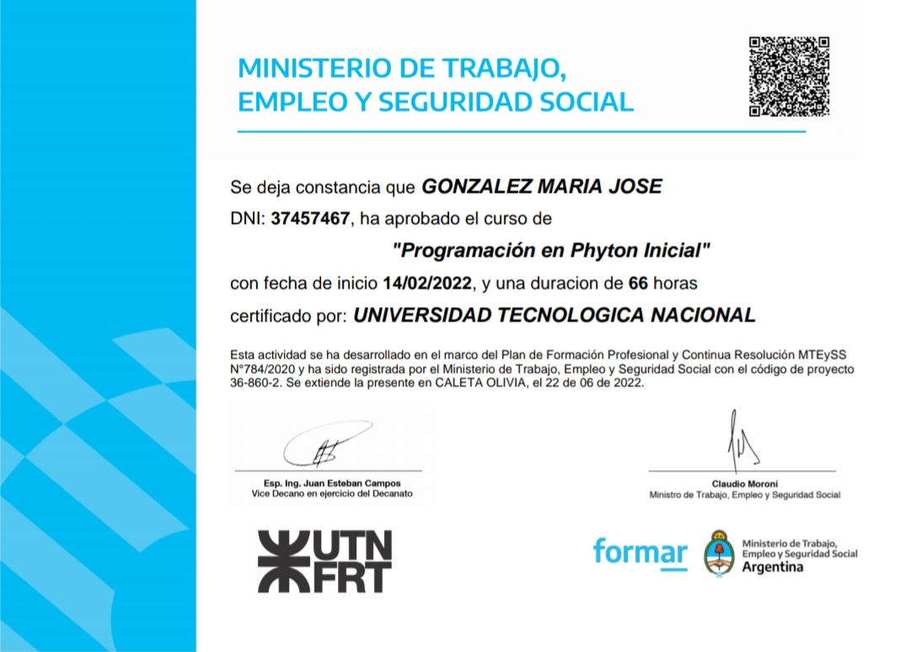
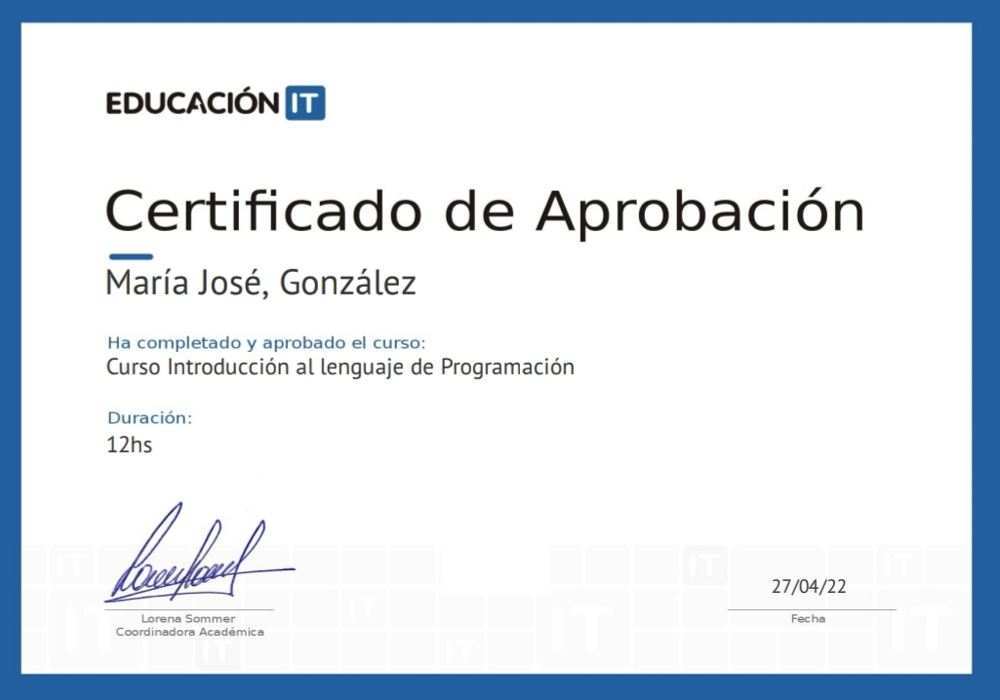
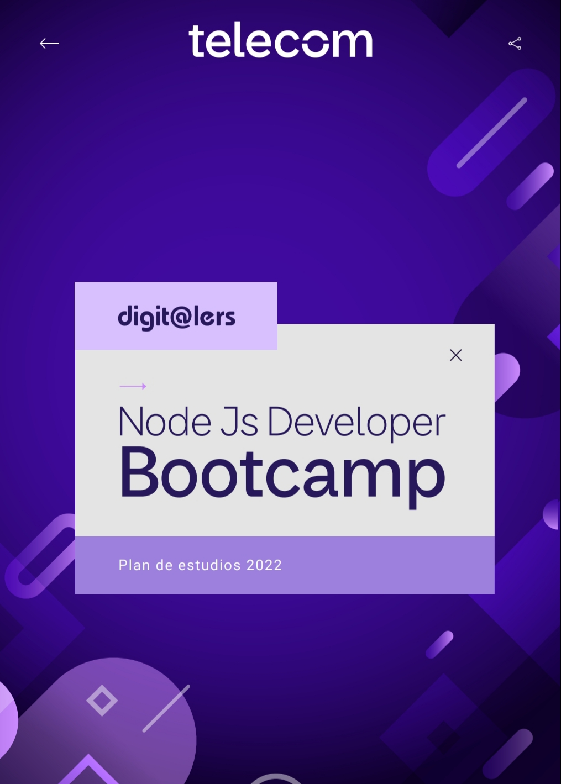
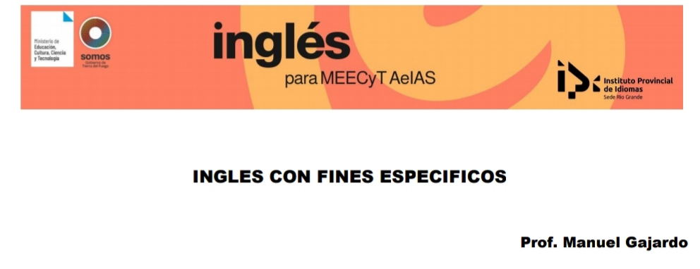

En el año 2011 ingreso a la carrera de Ingeniería Química en la cual estuve durante muchos años pero luego decidí cambiarme de carrera . Estos estudios fueron realizados en la Facultad de Ciencias Exactas y Tecnología de Tucumán-San Miguel de tucumán.
En el 2020 ingresé a la carrera de Ingeniería en Biomédica la Facultad de Ciencias Exactas y Tecnología de Tucumán-San Miguel de tucumán, luego de dos años hice un último cambio de carrera.
En 2022 ingresé en segundo año de la carrera de Ingeniería en Informática en la Facultad de Ciencias Exactas y Tecnología de la provincia de Tucumán-San Miguel de tucumán.
He realizado un curso brindado por la Universidad Tecnológica Nacional-Facultad Regional de tucumán, basada en la línea de formación en la economía del conocimiento brindada través del Ministerio de trabajo empleo y seguridad social de la Nación. El curso y la certificación se basó en Programación en Python inicial.
Actualmente estoy dentro de un curso brindado por Telecom Argentina Digit@lers, para ello primero debí aprobar un curso de ingreso, el cual tiene un certificado que es adjuntado a continuación. Es un programa de formación gratuita en programación y oficio digitales que busca Conectar a los jóvenes con su vocación digital. Dentro de la lista que de la cual se podía elegir, el curso Bootcamp NodeJs Developer, el cual consiste en Maquetación Web HTML5 y CSS, JAVASCRIPT, SPA,REST,AJAX, programación backend con NodeJs, ECMASCript, servidores de API Restful Json, bases de datos MongoDB, librería Mongoose , WebSockets.
 Actualmente estoy dentro de un curso de idioma inglés el cual es brindado a través de la beca Manuel belgrano es de tipo fines específicos IT el cual finaliza en el mes de diciembre del año 2022, brindado por el Ministerio de Educación Cultura Ciencia y Tecnología de Tierra del Fuego. Está dado por el Instituto Provincial de idiomas-sede Río Grande, brindada por el profesor Manuel Gajardo.
